정보통신기사(구) (2021-06-26 기출문제)
1과목: 디지털 전자회로
1. 다음 그림과 같이 2[kΩ]의 저항과 실리콘(Si)다이오드의 직렬 회로에서 다이오드 양단의 전압 크기는 얼마인가?
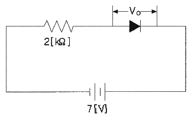
- 0[V]
- 1[V]
- 5[V]
- 7[V]
(정답률: 76%)
2. 콘덴서를 이용한 필터의 출력에 리플전압이 발생하는 이유는?
- 콘덴서의 인덕턴스
- 콘덴서의 개방
- 콘덴서의 충전과 방전
- 콘덴서의 단락
(정답률: 78%)

3. 다음 정류회로에 대한 설명으로 옳은 것은?
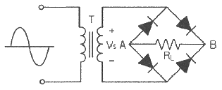
- 저전압 정류할 때 적합하다.
- VS가 양의 전압일 때 RL양단에 전류가 흐르지 않는다.
- RL에 걸리는 전압의 최대치는 T의 2차 전압의 최대치에 가깝다.
- 다이오드에 걸리는 역방향 전압의 최대치는 T의 2차 전압의 최대치에 2배에 가깝다.
(정답률: 70%)
4. 병렬저항형 이상형 발진회로에서 1.6[kHz]의 주파수를 발진하는데 필요한 저항 값은 약 얼마인가? (단, C = 0.01[μF])
- 2[kΩ]
- 4[kΩ]
- 6[kΩ]
- 8[kΩ]
(정답률: 62%)
5. 다음 바이어스 회로에서 트랜지스터의 DC 이득 β=100이고, VBE = 0.7[V] 이다. VCC = 10[V] 일 때 컬럭테에 흐르는 DC 전류 IC = 10[mA] 가 되도록 하는 바이어스 저항 Rb는 얼마인가?
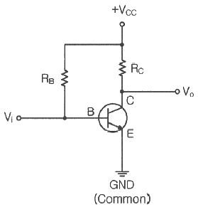
- 320[kΩ]
- 495[kΩ]
- 880[kΩ]
- 930[kΩ]
(정답률: 51%)
6. 다음 증폭기 회로에서 RE가 증가하면 어떤 현상이 일어나는가?
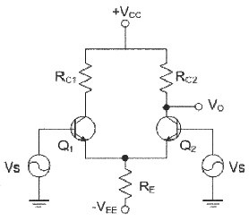
- 차동이득이 감소한다.
- 차동이득이 증가한다.
- 동상이득이 감소한다.
- 동상이득이 증가한다.
(정답률: 58%)
7. 전치 증폭기에 대한 설명으로 틀린 것은?
- 출력신호를 1차 증폭 시킨다.
- 초기신호를 정형한다.
- 고출력 증폭용으로 사용된다.
- 종단 증폭기에 비해 증폭률이 낮다.
(정답률: 52%)
8. 다음 그림과 같은 회로에 대한 설명으로 옳은 것은?
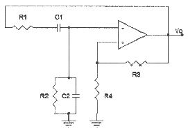
- 발진 주파수의 가변이 쉽다.
- 고주파용 발진기이다.
- 발진주파수
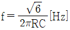
이다. - 증폭기의 전류이득이 29 이상이면 발진한다.
(정답률: 45%)
9. 다음 중 비반전 연산증폭기에 대한 설명으로 옳은 것은?
- 출력과 입력의 위상은 동위상이다.
- 두 개의 단자에 흐르는 전류는 최대값을 가진다.
- 입력단자의 전압은 0 이다.
- 폐루프 이득은 항상 1보다 작다.
(정답률: 60%)
10. 다음 회로의 동작점(Q)으로 알맞은 것은? (단, β = 50, VBE = 0.7[V])
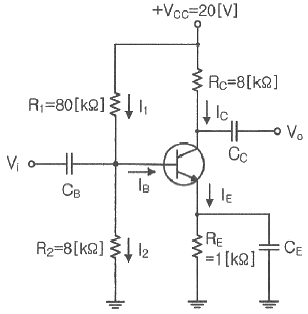
- 3.5[mA], 18.5[V]
- 2.5[mA], 17.5[V]
- 0.5[mA], 15.5[V]
- 0.3[mA], 10.5[V]
(정답률: 49%)
11. 9,600[bps]의 비트열을 16진 PSK로 변조하여 전송하면 변조속도는?
- 1,200[Baud]
- 2,400[Baud]
- 3,200[Baud]
- 4,600[Baud]
(정답률: 80%)
12. 다음 중 PWM의 특징과 거리가 먼 것은?
- PAM보다 S/N비가 크다.
- PPM보다 전력부하의 변동이 크다.
- LPF를 이용하여 간단히 복조할 수 있다.
- 진폭 제한기를 사용하여도 페이딩을 제거할 수는 없다.
(정답률: 62%)
13. 다음 중 주파수변조(FM)에서 신호대 잡음비(S/N)를 개선하기 위한 방법으로 틀린 것은?
- 디엠파시스(De-Emphasis) 회로를 사용한다.
- 잡음지수가 낮은 부품을 사용한다.
- 변조지수를 크게 한다.
- 증폭도를 크게 높인다.
(정답률: 68%)
14. 다음 중 주파수변조를 진폭변조와 비교한 설명으로 틀린 것은?
- 페이딩의 영향이 적다.
- 주파수의 혼신방해가 작다.
- 사용주파수대역이 좁다.
- S/N비가 개선된다.
(정답률: 69%)
15. 다음 중 출력 파형으로 구형파를 얻을 수 없는 회로는?
- 멀티바이브레이터
- 슈미트트리거 회로
- 부트스트랩 회로
- 슬라이서 회로
(정답률: 41%)
16. 다음 그림의 회로 명칭은 무엇인가?
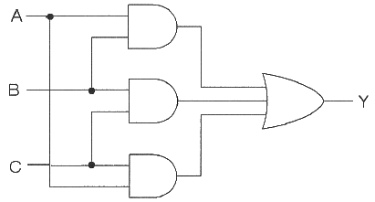
- 일치 회로
- 반 일치 회로
- 다수결 회로
- 비교 회로
(정답률: 71%)
17. 25진 리플 카운터를 설계할 경우 최소한 몇 개의 플립플롭이 필요한가?
- 3개
- 4개
- 5개
- 6개
(정답률: 82%)
18. 그림과 같은 회로의 출력은?
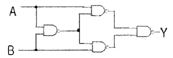
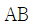
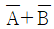
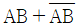
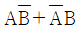
(정답률: 63%)
19. 반감산기에서 차를 얻기 위하여 사용되는 게이트는?
- 배타적OR게이트
- AND게이트
- NOR게이트
- OR게이트
(정답률: 58%)
20. 다음 중 슈미트 트리거 회로에 대한 설명으로 틀린 것은?
- 입력이 어느 레벨이 되면 비약하여 방형 파형을 발생시킨다.
- 입력 전압의 크기가 on, off 상태를 결정한다.
- 펄스 파형을 만드는 회로로 사용한다.
- 증폭기에 궤환을 걸어 입력신호의 진폭에 따른 1개의 안정 상태를 갖는 회로이다.
(정답률: 65%)
2과목: 정보통신 시스템
21. 정보통신시스템의 기본 구성에서 데이터전송계에 속하지 않는 것은?
- 중앙처리장치
- 전송회선
- 단말장치
- 통신제어장치
(정답률: 69%)
22. 다음 중 NFC(Near Field Communication)의 설명으로 틀린 것은?
- 13.56[MHz] 주파수 대역을 사용한다.
- 전송거리가 10[cm] 이내이다.
- Bluetooth에 비해 통신설정 시간이 길다.
- P2P(Peer to Peer)기능이 가능하다.
(정답률: 76%)
23. 정보처리시스템으로 분류되지 않는 것은?
- 중앙처리장치
- 통신회선
- 기억장치
- 입출력장치
(정답률: 58%)
24. 다음 문장의 괄호 안에 들어갈 알맞은 것은?
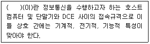
- 데이터 처리방식
- 데이터 전송방식
- 인터페이스
- 인터로킹
(정답률: 72%)
25. OSI 참조모델에서 서비스 프리미티브의 유형이 아닌 것은?
- REQUEST
- INDICATION
- REVIEW
- RESPONSE
(정답률: 67%)
26. 다음 중 TCP/IP 프로토콜에 관한 설명으로 거리가 먼 것은?
- TCP/IP는 De jure(법률) 표준이다.
- IP는 ARP, RARP, ICMP, IGMP를 포함한다.
- 인터넷에서 사용하는 프로토콜이다.
- TCP는 신뢰성 있는 스트립 전송 포트 대 포트 프로토콜이다.
(정답률: 76%)
27. 다음 중 정보통신 표준화 분야에서 핵심적인 역할을 수행하고 있는 국제 표준화 단체가 아닌 것은?
- IAU
- IEC
- ANSI
- TTA
(정답률: 55%)
28. 전화통신망(PSTN)에서 최번시 1시간에 발생한 호(Call)수가 240이고, 평균통화시간이 2분일 때 이 회선의 호량은?
- 0.1[Erl]
- 8[Erl]
- 40[Erl]
- 360[Erl]
(정답률: 78%)
29. 전자우편이나 파일전송과 같은 사용자 서비스를 제공하는 계층은?
- 물리계층
- 데이터링크계층
- 표현계층
- 응용계층
(정답률: 73%)
30. 호출 개시 과정을 통해 수신측과 논리적 접속이 이루어지며 각 패킷은 미리 정해진 경로를 통해 전송되어 전송한 순서대로 도착되는 교환방법은?
- 회선교환방법
- 가상회선교환방법
- 데이터그램교환방법
- 메시지교환방업
(정답률: 55%)
31. 다음 중 CSMA/CD 방식에 관한 특징으로 틀린 것은?
- 노드 수가 많고, 각 노드에서 전송하는 데이터 량이 많을수록 효율적인 전송이 가능하다.
- 데이터 전송이 필요할 때 임의로 채널을 할당하는 랜덤 할당 방식이다.
- 통신 제어 기능이 단순하여 적은 비용으로 네트워크화 할 수 있다.
- 채널로 전송된 프레임을 모든 노드에서 수신할 수 있다.
(정답률: 65%)
32. 다음 중 위성통신망의 회선 할당 방식으로 옳은 것은?
- PAMA
- FDMA
- TDMA
- CDMA
(정답률: 49%)
33. 전송장비인 허브(Hub)를 사용하는 이유가 아닌 것은?
- 단순히 Segment와 Segment 연결을 위해서만 사용한다.
- 네트워크 관리가 용이하다.
- 병목현상을 어느 정도 줄여준다.
- 다른 네트워크의 네트워크 장비와 연결가능 하도록 한다.
(정답률: 68%)
34. X.25 인터페이스 프로토콜에서 LAPB 방식을 정의하며, ISO 7776에서 제정하였고, HDLC 프로토콜의 일종으로 제어 순서, 오류, 흐름 등을 제어하는 계층은?
- 네트워크계층
- 데이터링크계층
- 물리계층
- 표현계층
(정답률: 67%)
35. 광대역통합망(BcN : Broadband Convergence Network)의 계층구소 중 전달망 계층에 대한 설명으로 옳지 않은 것은?
- 광대역(Broadband) 서비스 제공
- 이동망 사용자의 이동성(Mobility) 확보
- 서비스 보장(QoS) 및 정보보안
- 소프트스위치에 의한 다양한 서비스 구현
(정답률: 67%)
36. 다음 중 정보통신시스템 구축 시 네트워크에 관한 고려사항이 아닌 것은?
- 파일 데이터의 종류 및 측정방법
- 백업회선의 필요성 여부
- 단독 및 다중화 등 조사
- 분기회선 구성 필요성
(정답률: 71%)
37. 네트워크 관리 구성 모델에서 관리를 실행하는 객체와 관리를 받는 객체를 올바르게 짝지은 것은?
- Agent-Manager
- Manager-Server
- Client-Agent
- Manager-Agent
(정답률: 75%)
38. 송신자와 수신자 간에 전송된 메시지를 놓고, 전송치 않았음을 또는 발송되지 않은 메시지를 받았다고 주장할 수 없게 하는 정보의 속성은?
- 무결성
- 기밀성
- 인증
- 부인방지
(정답률: 67%)
39. 공개키 암호인 RSA 암호에 관한 설명 중 옳지 않은 것은?
- 데이터의 암호화에는 공개키가 사용되고 복호화에는 비밀키가 사용된다.
- 알고리즘의 안전성을 유지하기 위해서 비밀키는 공개키와 무관하게 생성해야 한다.
- 공개키 암호는 소인수 분해의 어려움에 기반을 두고 있다.
- RSA에서는 평문도 키도 암호문도 숫자이다.
(정답률: 62%)
40. 수리가 가능한 시스템에 고장난 후부터 다음 고장이 날 때까지의 평균시간을 의미하는 것은?
- MTBF
- MTTF
- MTTR
- Availability
(정답률: 56%)
3과목: 정보통신 기기
41. 다음 중 2개의 전극(Anode와 Cathode) 사이에 삽입된 유기물 층에 전기장을 가해 발광하게 되는 것은?
- CRT
- OLED
- PDP
- TFT-LCD
(정답률: 83%)
42. 그림, 차트, 도표, 설계 도면을 읽어 이를 디지털화하여 컴퓨터에 입력시키는 기기는?
- 디지타이저
- 플로터
- 그래픽 단말기
- 문자 판독기
(정답률: 77%)
43. DOCSIS(Data Over Cable Service Interface Specifications)라는 표준 인터페이스 규격을 활용하는 단말은?
- 케이블 모뎀
- 휴대폰
- 스마트 패드
- 유선 일반전화기
(정답률: 80%)
44. 다음 중 시분할 다중화기에 대한 설명과 가장 거리가 먼 것은?
- 비트 삽입식과 문자 삽입식의 두 가지가 있다.
- 시분할 다중화기가 주로 이용되는 곳은 Point-to-Point 시스템이다.
- 각 부채널은 고속의 채널을 실제로 분배된 시간을 이용한다.
- 보통 1200[baud] 이하의 비동기식에 사용한다.
(정답률: 59%)
45. 통신속도를 달리하는 전송회선과 단말기를 접속하기 위한 방식으로 실제로 전송할 데이터가 있는 단말기에만 채널을 동적으로 할당하는 방식을 무엇이라 하는가?
- 집중화기
- 다중화기
- 변조기
- 부호기
(정답률: 66%)
46. ITU-T 의 모뎀표준으로 14,000[bps] 전송을 지원하는 최초의 표준은?
- V.32
- V.32bis
- V.34bis
- V.90
(정답률: 69%)
47. 4-PSK 변조방식에서 변조속도가 1,200[baud]일 때 데이터 전송속도는 몇 [bps] 인가?
- 1,200[bps]
- 2,400[bps]
- 3,600[bps]
- 4,800[0
(정답률: 75%)
48. TV 방식의 기능 중 전기장 또는 자기장에 의하여 전자빔의 방향을 바꾸는 기능으로 옳은 것은?
- 비월주사 기능
- 동기 기능
- 편향 기능
- 비동기 기능
(정답률: 69%)
49. 20개의 중계선으로 5[Erl]의 호량을 운반하였다면 이 중계선의 효율은 몇 [%] 인가?
- 20[%]
- 25[%]
- 30[%]
- 35[%]
(정답률: 77%)
50. 다음 중 CATV의 특성이라고 볼 수 없는 것은?
- 서비스는 지역적 특성이 높다.
- 전송 품질이 양호하다.
- 단방향 전송만 가능하다.
- 채널 용량이 증가한다.
(정답률: 75%)
51. 유선전화망에서 노드가 10개일 때 그물형(Mesh)으로 교환회선을 구성할 경우, 링크 수를 몇 개로 설계해야 하는가?
- 30개
- 35개
- 40개
- 45개
(정답률: 80%)
52. 다음 중 CCTV의 기본 구성요소로 틀린 것은?
- 촬영장치
- 헤드엔드
- 전송장치
- 표시장치
(정답률: 78%)
53. 다음 중 이동통신에서 이론적으로 시스템의 용량을 증가시킬 수 있는 방법이 아닌 것은?
- 점유 주파수 대역을 넓힌다.
- 비트에너지 대 잡음전력 밀도 비를 낮춘다.
- 섹터화 이득을 높인다.
- 음성활성화율을 높인다.
(정답률: 45%)
54. 셀룰러(Cellular) 방식의 이동통신에서 입력속도 9.6[kbps], 출력속도 1.2288[Mbps] 일 때 확산이득은 약 얼마인가?
- 15.03[dB]
- 19.40[dB]
- 21.07[dB]
- 24.50[dB]
(정답률: 73%)
55. 다음 문장에서 (a), (b), (c), (d)의 순서대로 바르게 나열된 것은?
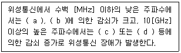
- 대기가스 – 강우 – 우주잡음의 증가 - 전리층
- 우주잡음의 증가 – 전리층 – 대기가스 - 강우
- 대기가스 – 전리층 – 우주잡음의 증가 - 강우
- 강우 – 우주잡음의 증가 – 대기가스 – 전리층
(정답률: 56%)
56. 다음 중 부호분할다원접속(CDMA) 방식에 대한 설명으로 옳지 않은 것은?
- 위성통신에서만 사용되고 있는 다원접속방식이다.
- 의사불규칙 잡음코드를 사용한다.
- 주파수도약방식을 사용하므로 페이딩에 강하다.
- 사용 스펙트럼의 확산으로 인접 주파수대역에 대한 간섭을 줄일 수 있다.
(정답률: 68%)
57. 다음 중 팩스 적동원리를 순서대로 나열한 것은?
- 송신주사 → 전송 → 기록변환 → 광전변환 → 수신주사
- 송신주사 → 광전변환 → 전송 → 기록변환 → 수신주사
- 송신주사 → 기록변환 → 광전변환 → 전송 → 수신주사
- 송신주사 → 기록변환 → 전송 → 광전변환 → 수신주사
(정답률: 64%)
58. 다음 중 메시지 처리시스템(MHS)의 구성 요소가 아닌 것은?
- MS(Message Store)
- UA(User Agent)
- MTA(Message Transfer Agnet)
- MH(Message Host)
(정답률: 62%)
59. PSTN을 통해 이루어졌던 음성 전송을 인터넷 망을 사용하여 제공하는 인터넷 텔레포니의 핵심기술은?
- VoIP
- DMB
- WiBro
- VOD
(정답률: 81%)
60. 다음 문장에서 설명하는 디지털 멀티미디어 콘텐츠 보호방법은?
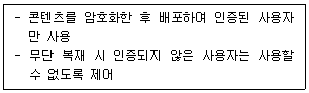
- DRM
- Water Marking
- DOI
- INDECS
(정답률: 67%)
4과목: 정보전송 공학
61. 표본화 정리에 의하면 주파수 대역이 60[Hz]~3.6[kHz]인 신호를 완전히 복원하기 위한 표본화 주기는?
- 1/60[초]
- 1/3.6[초]
- 1/7,200[초]
- 1/6,800[초]
(정답률: 76%)
62. 다음 중 나이퀴스트(Nyquist) 표본화 주파수(fs)로 알맞은 것은? (단, fm은 최고주파수이다.)
- fs = 2fm
- fs ＜ 2fm
- fs ＞ 2fm
- fs ≤ 2fm
(정답률: 74%)
63. 5[kHz]의 음성신호를 재생시키기 위한 표본화 주기는?
- 225[μs]
- 200[μs]
- 125[μs]
- 100[μs]
(정답률: 65%)
64. 다음 중 Dense WDM(DWDM)에서 사용하는 파장대역이 틀린 것은?
- 20[nm]
- 1.6[nm]
- 0.8[nm]
- 0.4[nm]
(정답률: 74%)
65. 광통신에서 전송 용량을 증대시키는(고속화)기술로서 가장 관계가 적은 것은?
- Soliton 기술
- WDM(Wavelength Division Multiplexing)방식
- EDFA(Eribium Doped Fiber Amplifier)
- Intensity Modulation
(정답률: 51%)
66. 다음 중 광케이블 기반 광통신의 장점으로 틀린 것은?
- 저손실성
- 광대역성
- 세경성 및 경량성
- 심선 접속의 용이성
(정답률: 64%)
67. 전파통신이 가능한 가시거리(Line-of-Sight)를 구하는 공식은? (단, d는 가시거리, K는 지구의 곡률에 의한 보정 계수, H는 안테나의 높이[m])
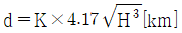
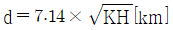
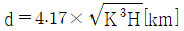
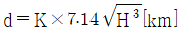
(정답률: 67%)
68. 다음 중 중계국에 할당된 여러 개의 주파수 채널을 다수의 이용자가 공동으로 사용하는 주파수공용통신(TRS)에 대한 설명으로 틀린 것은?
- 음성과 데이터의 전송이 가능하다.
- 채널당 주파수 이용효율이 낮다.
- 신속한 호접속이 가능하다.
- 산업용 통신에 주로 이용된다.
(정답률: 71%)
69. 다음 중 마이크로파 통신의 특징으로 틀린 것은?
- 파장이 길다.
- 광대역성이 가능하다.
- 강한 직진성을 가진다.
- S/N을 개선할 수 있다.
(정답률: 64%)
70. 다음 중 병렬전송의 특징이 아닌 것은?
- 근거리 전송에 적합하다.
- 단위시간에 다량의 데이터를 고속으로 전송할 수 있다.
- 비용이 많이 든다.
- 한번에 한 비트만 전송이 가능하다.
(정답률: 75%)
71. 다음 중 동기식 전송방식과 비교한 비동기 전송방식에 대한 설명으로 올바른 것은?
- 블록단위 전송방식이다.
- 비트신호가 1에서 0으로 바뀔 때 송신시작을 의미한다.
- 각 비트마다 타이밍을 맞추는 방식이다.
- 전송속도와 전송효율이 높은 방식이다.
(정답률: 57%)
72. 다음 중 공통선 신호 방식에 해당하지 않는 것은?
- 통화로와 신호전송이 분리되어 다수의 통화에 필요한 신호를 한 채널로 전송하는 방식
- 아날로그 신호방식(No.6)
- 디지털 신호방식(No.7)
- 국 간 망에 분포되어 있는 트래픽 부하를 조절하기 위해서 전화국간에 주고 받는 신호방식
(정답률: 58%)
73. 문자동기방식에서 에러를 체크하기 위한 코드는?
- ETX(end of Text)
- STX(Start og Text)
- BCC(Clock Check Character)
- BSC(Binary Synchronous Control)
(정답률: 73%)
74. 다음 중 VLAN 표준 프로토콜의 VLAN Tag 구성에 대한 설명으로 틀린 것은?
- 이더넷 프레임 앞에 VLAN Header로 캡슐화하여 구성된다.
- TPID는 O×8100의 고정된 값의 태크 프로토콜 식별자이다.
- TCI는 VLAN 정보와 프레임의 우선순위 값을 표시한다.
- VID는 12비트로 구성되며 VLAN ID로 사용된다.
(정답률: 40%)
75. 다음 중 고속 LAN으로 대학캠퍼스나 공장같이 한 곳에 모여 있는 LAN들을 연결하는데 주로 사용되는 것은?
- FDDI
- ASK
- QAM
- FSK
(정답률: 76%)
76. 다음 중 정보 통신망에서 정보를 교환하는 방식이 아닌 것은?
- 회선 교환(Circuit Switching) 방식
- 메시지 교환(Message Switching) 방식
- 패킷 교환(Packet Switching) 방식
- 프레임 교환(Frame Switching) 방식
(정답률: 61%)
77. 다음 중 동적(Dynamic) VLAN을 구성하는 기준이 되는 것은?
- 스위치 포트
- 라우터 포트
- MAC 주소
- IP 주소
(정답률: 56%)
78. 다음 중 비트 방식의 데이터링크 프로토콜이 아닌 것은?
- BSC
- SDLC
- HDLC
- LAPB
(정답률: 63%)
79. 다음 중 통신 시스템 내에 있는 동위 계층 또는 동위 개체 사이에서의 데이터 교환을 위한 프로토콜은?
- 응용 지향 프로토콜
- 네트워크 내부 프로토콜
- 프로세서간 프로토콜
- 네트워크간 프로토콜
(정답률: 47%)
80. 다음 중 패리티 검사(Parity Check)를 하는 이유는 무엇인가?
- 수신정보내의 오류 검출
- 전송되는 부호의 용량 검사
- 전송데이터의 처리량 측정
- 통신 프로토콜의 성능 측정
(정답률: 81%)
5과목: 전자계산기일반 및 정보통신설비기준
81. 다음 중 설명이 옳지 않은 것은?
- 마이크로프로세서는 디지털 데이터를 입력받고, 메모리에 저장된 지시에 따라 처리하며, 결과를 출력으로 내놓는 다목적의 프로그램 실행이 가능한 기기이다.
- 마이크로프로세서는 프로그램이라는 형태로 용도에 따라 메모리에 축척하는 방식을 택한 것이 마이크로컴퓨터의 모태가 되고 있다.
- 인텔은 1971년 최초의 4비트 마이크로프로세서 4004를 선보였다.
- 최초의 마이크로프로세서는 일반 컴퓨터의 중앙처리장치에서 주기억장치와 연산장치, 제어장치 및 각종 레지스터들을 단지 1개의 IC 소자에 집적시킨 것이다.
(정답률: 60%)
82. 2진수 (100011)를 2의 보수(two's complement)로 표시한 것은?
- 100011
- 011100
- 011101
- 011110
(정답률: 77%)
83. 다음 중 Parity Bit에 대한 설명으로 틀린 것은?
- 1Bit의 에러를 검출하는 코드이다.
- 2Bit 이상 에러가 발생하면 검출할 수 없다.
- Parity Bit를 포함해서 '1'의 개수가 짝수 또는 홀수인지 검사한다.
- '1'의 개수를 홀수 개로 하면 짝수 Parity, 짝수 개로 하면 홀수 Parity라 한다.
(정답률: 71%)
84. 정보표현의 단위가 작은 것부터 큰 순으로 올바르게 나열된 것은?
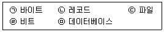
- ㉠ ㉡ ㉢ ㉣ ㉤
- ㉣ ㉠ ㉡ ㉢ ㉤
- ㉣ ㉢ ㉠ ㉤ ㉡
- ㉠ ㉣ ㉢ ㉡ ㉤
(정답률: 81%)
85. 다음은 인터럽트 처리과정을 나타낸 것이다. 처리과정의 순서를 올바르게 나열한 것은?
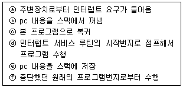
- ⓐ → ⓓ → ⓑ → ⓒ → ⓕ → ⓔ
- ⓐ → ⓔ → ⓓ → ⓑ → ⓒ → ⓕ
- ⓔ → ⓐ → ⓓ → ⓑ → ⓒ → ⓕ
- ⓔ → ⓐ → ⓑ → ⓓ → ⓒ → ⓕ
(정답률: 72%)
86. 마이크로프로세서로 구성된 중앙처리장치는 명령어의 구성방식에 따라 2가지로 나눌 수 있다. 이중 연산 속도를 높이기 위해 처리할 수 있는 명령어 수를 줄였으며, 단순화된 명령구조로 속도를 최대한 높일 수 있도록 한 것은?
- SCSI(Small Computer System Interface)
- MISC(Micro Instruction Set Computer)
- CISC(Complex Instruction Set Computer)
- RISC(Reduced Instruction Set Computer)
(정답률: 73%)
87. 메모리 관리에서 빈 공간을 관리하는 Free 리스트를 끝까지 탐색하여 요구되는 크기보다 더 크되, 그 차이가 제일 작은 노드를 찾아 할당해주는 방법은?
- 최초적합(First-Fit)
- 최적적합(Best-Fit)
- 최악적합(Worst-Fit)
- 최후적합(Last-Fit)
(정답률: 80%)
88. 다음 괄호에 들어갈 내용으로 맞게 나열된 것은?
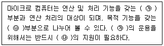
- ㉮ 하드웨어, ㉯ 소프트웨어
- ㉮ CPU, ㉯ Memory
- ㉮ ALU, ㉯ DATA
- ㉮ CPU, ㉯ 소프트웨어
(정답률: 58%)
89. 다음 중 마이크로 명령어에 대한 설명으로 틀린 것은?
- OP코드와 오퍼랜드로 구분한다.
- 오퍼랜드에는 주소, 데이터 등이 저장된다.
- 오퍼랜드는 오직 한 개의 주소만 존재한다.
- 컴퓨터의 기계어 명령을 실행하기 위해서 수행되는 낮은 수준의 명령어이다.
(정답률: 68%)
90. 자원을 효율적으로 관리하기 위한 운영체제의 추가관리 기능들로 올바르게 나열된 것은?
- 프로세스관리기능-명령해석기시스템-보호시스템
- 명령해석기시스템-보호시스템-네트워킹
- 주기억장치관리-네트워킹-명령해석기시스템
- 주변장치관리기능-보호시스템-네트워킹
(정답률: 38%)
91. 다음 중 용역업자가 발주자에게 통보해야 하는 감리결과에 포함되지 않는 것은?
- 착공일 및 완공일
- 공사업자의 성명
- 사용자재의 제조원가
- 정보통신기술자배치의 적정성 평가결과
(정답률: 66%)
92. 정보통신공사업을 경영하려는 자는 누구에게 공사업 등록을 신청하여야 하는가?
- 도지사
- 방송통신위원장
- 과학기술정보통신부장관
- 정보통신공사협회장
(정답률: 54%)
93. 방송통신설비의 기술기준에 관한 규정에서 정의하고 있는 '선로설비'가 아닌 것은?
- 분배장치
- 전주
- 관로
- 배선반
(정답률: 52%)
94. 다음 중 통신공동구의 유지·관리에 필요한 부대설비가 아닌 것은?
- 조명시설
- 환기시설
- 집수시설
- 접지시설
(정답률: 69%)
95. 방송통신설비의 설치 및 보전은 무엇에 따라 하여야 하는가?
- 설계도서
- 프로토콜
- 전기통신기술기준
- 정보통신공사업법
(정답률: 66%)
96. 영상정보처리기기를 설치·운영하는 자는 영상정보처리기기가 설치·운영되고 있음을 알려주는 안내판을 설치하는 등 필요한 조치를 하여야 한다. 이때 안내판에 포함되는 사항이 아닌 것은?
- 녹음기능 및 보관기간
- 촬영 범위 및 시간
- 설치 목적 및 장소
- 관리책임자 성명 및 연락처
(정답률: 61%)
97. 국선과 국내간선케이블 또는 구내케이블을 종단하여 상호 연결하는 통신용 분배함은 무엇인가?
- 분계점
- 국선접속설비
- 국선단자함
- 국선배선반
(정답률: 53%)
98. 다음 중 정보통신공사업법에 따른 감리원의 업무범위가 아닌 것은?
- 공사계획 및 공정표의 검토
- 공사업자가 작성한 시공상세도면의 검토·확인
- 설계도서 변경 및 시공일정의 조정
- 공사가 설계도서 및 관련규정에 적합하게 행하여지고 있는 지에 대한 확인
(정답률: 73%)
99. 기간통신사업자가 전기통신서비스의 요금을 감면할 수 있는 대상이 아닌 것은?
- 인명·재산의 위험 및 재해의 구조에 관한 통신 또는 재해를 입은 자의 통신을 위한 전기통신서비스
- 전시(戰時)에 군 작전상 필요한 통신을 위한 전기통신서비스
- 남북 교류 및 협력의 촉진을 위하여 필요로 하는 통신을 위한 전기통신서비스
- 기간통신사업자의 고객유치를 위한 전기통신서비스
(정답률: 75%)
100. 다음 중 정보통신공사업에서 규정한 정보통신설비의 설치 및 유지·보수에 관한 공사와 이에 따른 부대공사로 잘못된 것은?
- 수전설비를 포함한 정보통신전용 전기시설설비공사 등 그 밖의 설비공사
- 전기통신관계법령 및 전파관계법령에 의한 통신설비공사
- 정보통신관계법령에 의하여 정보통신설비를 이용하여 정보를 제어·저장 및 처리하는 정보설비공사
- 방송법 등 방송관계법령에 의한 방송설비공사
(정답률: 60%)